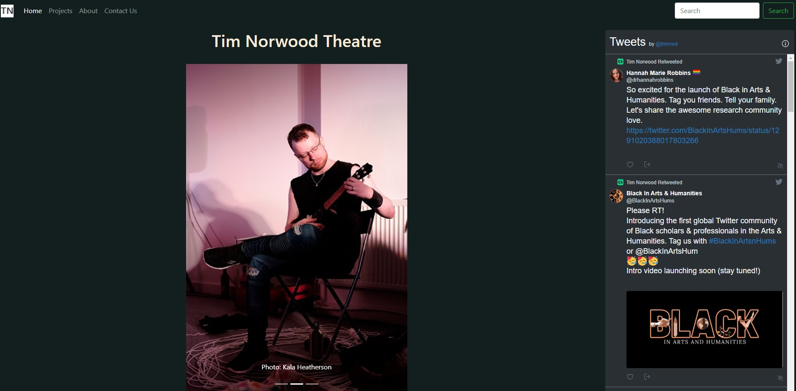

My Theatre Portfolio
My first project created with CSS and Bootstrap, this is a simple portfolio to display some of the projects I've done in my
work in the theatre industry.

My new challenge in creating the portfolio was:
- Creating a design for the website.
CSS makes it easy to have a consistent design across a website. I decided that I wanted to keep things
simple so that the user experience focuses on the site's content:
-
A bootstrap navbar at the top of every page allows navigation between pages.
-
I added a carousel of project images, a short bio, and my latest work, to the homepage to give an immediate flavour for what the website is about. I also embedded my Twitter feed as well, to show that this is a person's website rather than a faceless company's.
-
For the projects page, I included several thumbnail images from each project as well as a description of the project.
-
For the about page, a longer bio, with highlights and forthcoming work.
-
The contact page contains contact and mailing list signup forms, though for now they're purely cosmetic.
-
Graphic design is not my passion (so far, anyway), so I wanted to go with a fairly plain aesthetic for the website.
I went with a a dark grey/white colour scheme both because my theatre work tends to focus on difficult topics, so lots of colour wouldn't really be appropriate, and to allow project photos to speak for themselves.